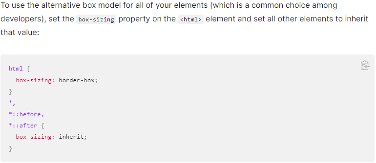

We can find 4 main parts:
- Content: The width and heigth change the size of the content. Ex:
- Width: 300px
- Height: 50px
- Padding: It's added outside. Ex:
- 10px
- Border
- Margin

We can find 4 main parts:
The padding area also takes the color of the background.
The dimensions of the above box element is:
In order to calculate how many pixels we'll use in the box we have to calculate:
Final width = width - vertical borders - vertical padding
Alternative Box model: it calculates the box width and heigth and then you specify the padding and the border inside these params
Below we can see an example. Where the first example (html) shows how to do ir when select only one box model element, and the second one is for all
Everything explained until now applies only to block elements
I am a paragraph and this is a span inside that paragraph. A span is an inline element and so does not respect width and height.
Left and rigth padding moved the surrounding text, but the top and bottom padding did not. Aditionally, the ackground color still overlaps the entire size of the element.